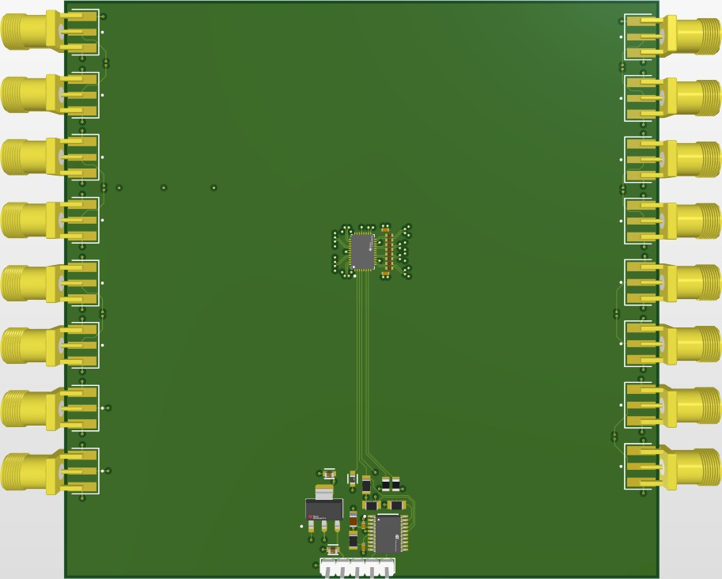
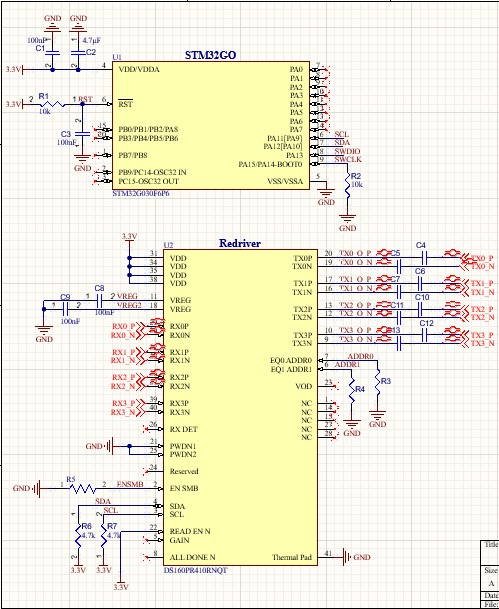
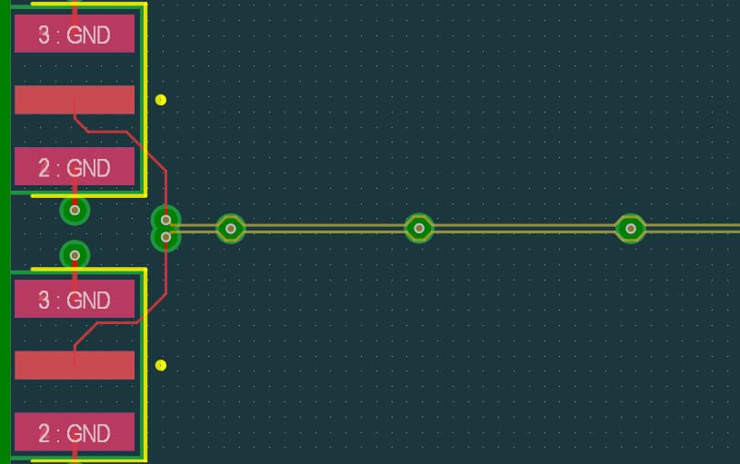

Active PCIe Gen 4 Signal Conditioner (Redriver)
A 4-channel PCIe Gen 4 (16 GT/s) test board that routes intentionally degraded differential pairs into a redriver IC to study signal restoration and high-speed transmission line effects.

Overview
This board is a design and layout exercise focused on modeling common high-speed signal degradation mechanisms and evaluating, at the schematic and layout level, how a redriver IC would correct them. Each of the four channels intentionally implements a distinct layout defect — a via crossing, a length mismatch, or added trace loss — so that the same hardware-tuned Texas Instruments redriver and STM32-based equalization control can be evaluated against a range of realistic PCIe Gen 4 signal integrity problems.
The problem
At 16 GT/s, differential pairs are unforgiving of layout mistakes — a via crossing, a few millimeters of length mismatch, or extra trace length can each independently degrade signal integrity enough to cause link failure. The design challenge was to build a single test PCB that could isolate and reproduce three of these failure modes on separate channels, route each degraded signal into a shared redriver, and keep the redriver's own power delivery clean enough (a stable, low-noise 3.3V rail via a linear regulator with decoupling capacitor networks) that it wasn't introducing additional noise into the measurement.
Design process
The architecture centers on a hardware-tuned Texas Instruments redriver paired with an STM32 microcontroller handling per-channel equalization control. Rather than modeling every possible layout defect on one channel, I split the board into four independent channels — via-induced impedance discontinuity, unmatched length skew, channel loss, and a clean reference — so each failure mode could be isolated and evaluated without interference from the others. The hardest part of the layout was the via-crossing channel: routing each trace of a differential pair around an obstructing via physically splits the coupled lines, and getting that split to reliably produce a defined impedance discontinuity (rather than an uncontrolled one) took several iterations of via placement and return-path planning.


Challenges & what I'd change
- Isolating the length-skew and channel-loss defects to a specific, repeatable value (rather than an arbitrary one) meant working backward from the redriver's published equalization range to pick trace geometries that would actually stress-test its correction limits, instead of just "adding some extra length."
- I intentionally stopped this project at schematic capture and layout rather than fabricating the board. In hindsight, I'd scope a smaller two-channel version first — enough to prove the via-crossing and skew defects independently — so a first fab run would be cheaper and faster to iterate on than committing to all four channels at once.
Status & next steps
This project was carried through schematic capture and full 4-channel PCB layout, completed between July and August 2026, and intentionally stopped there — the board was not fabricated or bench-tested. The goal was to demonstrate high-speed layout judgment (differential pair routing, impedance-aware constraint management, and deliberate defect modeling) at the design stage, rather than to validate a physical prototype in this phase.
If fabricated, this board would allow bench validation of each modeled defect and the redriver's correction performance — using oscilloscope eye-diagram capture, TDR-based impedance verification, and measured insertion/return loss against the design targets.
Downloads
- Schematic (PDF) DOWNLOAD ↓